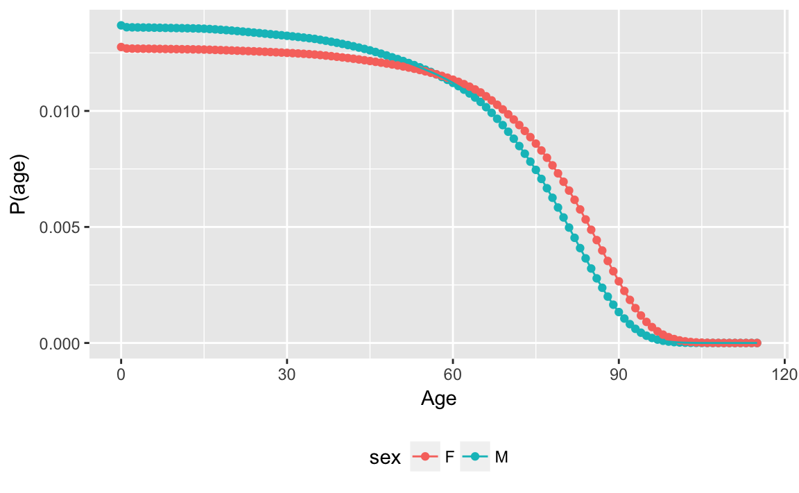
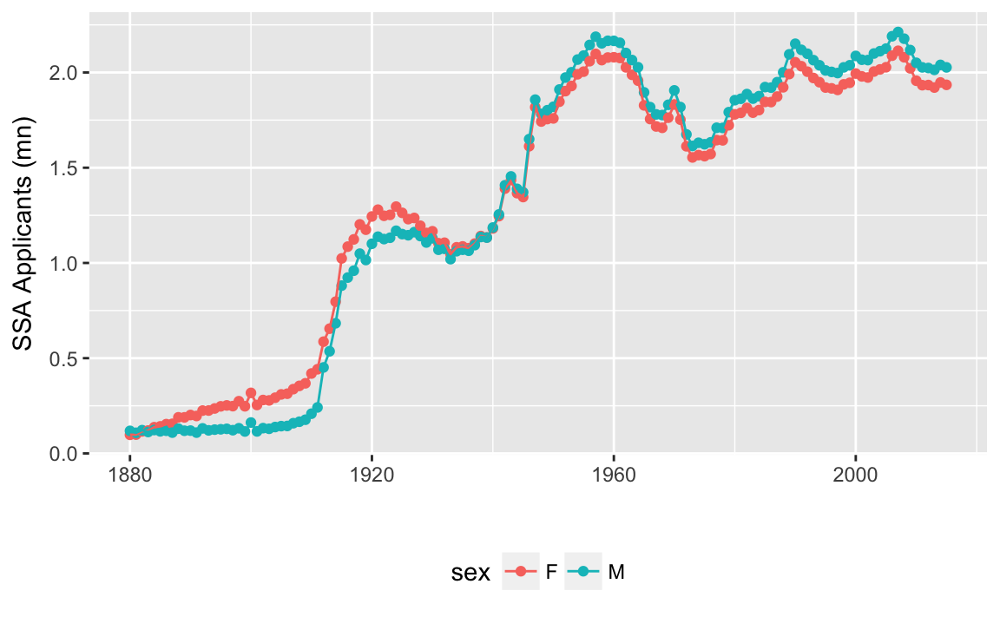
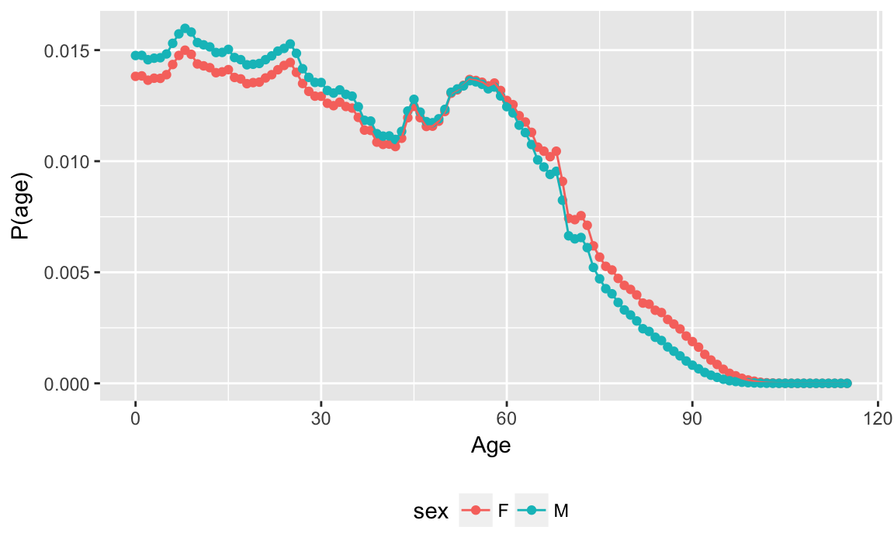
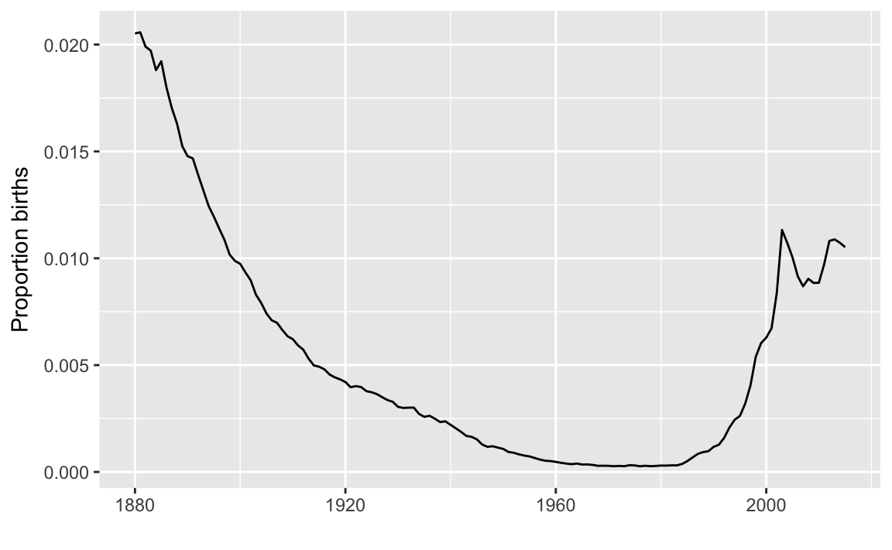
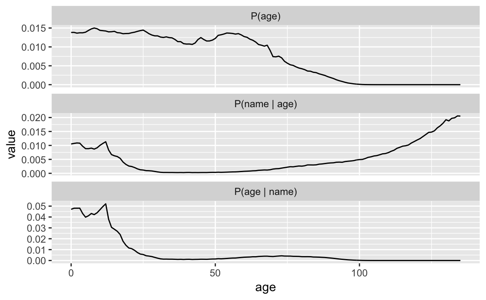

3 Example: Predicting Names from Ages
Prerequisites
This analysis uses these packages.
library("tidyverse")
library("babynames")3.1 Statement of the problem
Suppose I know your sex and name, can I guess you age?
The probability of an age given a name and sex, \[ P(\text{age} | \text{name}, \text{sex}) \propto P(\text{name} | \text{age}, \text{sex}) P(\text{age} | \text{sex}) \]
3.2 Data Wrangling
The source of our data is the babynames package in R.
YEAR <- 2015We’ll consider a single year in our analysis 2015, which is the last year in the babynames package.
The life tables are only provided for the decades from 1900 to 2010. We need to fill in the full life table for all birth years. For years between 1900 and 2010, we will linearly impute the probability of being alive at each age for non-decadal birth years. We’ll use 2010 for all birth-years after 2010.
life_table <- babynames::lifetables %>%
group_by(year) %>%
mutate(px = lx / 1e+05) %>%
rename(age = x) %>%
select(year, age, sex, p_alive = px) %>%
ungroup() %>%
complete(sex, year = seq(min(year), YEAR, by = 1), age) %>%
rename(birthyear = year) %>%
group_by(sex, age) %>%
arrange(sex, age, birthyear) %>%
mutate(p_alive = zoo::na.approx(p_alive, na.rm = FALSE)) %>%
fill(p_alive, .direction = "down") %>%
ungroup() %>%
arrange(sex, age, birthyear)For this analysis, we only need the age distribution in 2015.
age_distr <- life_table %>%
mutate(year = birthyear + age,
# convert sex to character to avoid join warning
sex = as.character(sex)) %>%
filter(year == YEAR) %>%
select(-year)glimpse(life_table)
#> Observations: 27,840
#> Variables: 4
#> $ sex <fct> M, M, M, M, M, M, M, M, M, M, M, M, M, M, M, M, M, M...
#> $ birthyear <dbl> 1900, 1901, 1902, 1903, 1904, 1905, 1906, 1907, 1908...
#> $ age <dbl> 0, 0, 0, 0, 0, 0, 0, 0, 0, 0, 0, 0, 0, 0, 0, 0, 0, 0...
#> $ p_alive <dbl> 1, 1, 1, 1, 1, 1, 1, 1, 1, 1, 1, 1, 1, 1, 1, 1, 1, 1...However, the p_alive column of age_distr only provides the probability of being alive in 2015 conditional on having been born in a given year (and sex),
ggplot(age_distr,
aes(x = birthyear, y = p_alive, color = sex)) +
geom_point() +
geom_line() +
labs(y = expression(paste("P", group("(", paste(alive, "|", year), ")"))),
x = "Year of Birth")Figure 3.1: Probability
We need the number born each year to be able to calculate the number alive in each year, and the age distribution. Suppose that the number born in each year was equal, the age distribution would be:
age_distr %>%
group_by(sex) %>%
mutate(p = p_alive / sum(p_alive)) %>%
ggplot(aes(x = age, y = p, color = sex)) +
geom_point() +
geom_line() +
labs(x = "Age", y = "P(age)") +
theme(legend.pos = "bottom")
As a proxy for the number born each year we’ll use the proportion of Social Security applicants each year, provided by the babynames::applicants. Since the baby-name information will also come from the Social Security data this is no less restrictive.
ggplot(babynames::applicants, aes(x = year, y = n_all / 1e6, color = sex)) +
geom_point() +
geom_line() +
labs(x = "", y = "SSA Applicants (mn)") +
theme(legend.pos = "bottom")
Clearly, the number of births is not constant per year.
Join the SSA applicant numbers and calculate the probability of each age by sex in 2015.
age_distr <- left_join(age_distr,
rename(babynames::applicants, n_apps = n_all),
by = c("sex", "birthyear" = "year")) %>%
mutate(n_alive = p_alive * n_apps) %>%
group_by(sex) %>%
mutate(p_age = n_alive / sum(n_alive)) %>%
ungroup() %>%
arrange(sex, age)After accounting for different numbers of births in each year, the age distribution is different.
ggplot(age_distr, aes(x = age, y = p_age, color = sex)) +
geom_point() +
geom_line() +
labs(x = "Age", y = "P(age)") +
theme(legend.pos = "bottom")
The babynames dataset has the number in each sex born each year with a given name (and registered by the SSA).
glimpse(babynames)
#> Observations: 1,858,689
#> Variables: 5
#> $ year <dbl> 1880, 1880, 1880, 1880, 1880, 1880, 1880, 1880, 1880, 188...
#> $ sex <chr> "F", "F", "F", "F", "F", "F", "F", "F", "F", "F", "F", "F...
#> $ name <chr> "Mary", "Anna", "Emma", "Elizabeth", "Minnie", "Margaret"...
#> $ n <int> 7065, 2604, 2003, 1939, 1746, 1578, 1472, 1414, 1320, 128...
#> $ prop <dbl> 0.07238, 0.02668, 0.02052, 0.01987, 0.01789, 0.01617, 0.0...The column prop is the proportion of people of that gender with that name born in each year, \(P(\text{name} | \text{age}, \text{sex})\).
baby_names <- babynames::babynamesAlso, since the SSA only releases names with > 5 individuals in a year, add an additional entry for each year for babies born and given rare names.
babynames_other <- baby_names %>%
group_by(sex, year) %>%
summarise(p_named = sum(prop), n_named = sum(n)) %>%
mutate(prop = 1 - p_named, n = n_named / p_named * prop,
name = "OTHER") %>%
select(sex, year, prop, name, n, prop) %>%
ungroup()baby_names <- bind_rows(baby_names, babynames_other)3.3 Probability of age given name and sex
Consider someone with the name of “Emma” and sex is “female”. What is the posterior distribution of their age, \[ p(\text{age} | \text{name} = \text{"Emma"}, \text{sex} = \text{"F"}) = p(\text{name} = \text{"Emma"} | \text{age}, \text{sex} = \text{"F"}) p(\text{age} | \text{sex} = \text{"F"}) . \]
name <- "Emma"
sex <- "F"Filter babynames to only include observations for the name “Emma” and sex “Emma”:
p_name_age <- baby_names %>%
filter(name == !!name, sex == !!sex) %>%
select(-sex, -name) %>%
mutate(age = YEAR - year)ggplot(p_name_age, aes(x = year, y = prop)) +
geom_line() +
labs(x = "", y = "Proportion births")
The popularity of the name Emma first declined, then increased. However, very few of those born when Emma was first popular are likely to still be alive.
posterior <-
left_join(p_name_age,
select(filter(age_distr, sex == !!sex), birthyear, prior = p_age),
by = c(year = "birthyear")) %>%
rename(likelihood = prop) %>%
# fill in missing values with 0
mutate(prior = if_else(is.na(prior), 0, prior),
# postrior
post = likelihood * prior,
# normalize posterior to sum to 1
post = post / sum(post))Let’s plot the prior (\(P(age)\)), likelihood (\(P(name | age)\)), and posterior (\(P(name | age)\)).
posterior %>%
select(age, post, likelihood, prior) %>%
gather(variable, value, -age) %>%
mutate(variable = recode(variable, post = "P(age | name)",
likelihood = "P(name | age)", prior = "P(age)"),
variable = factor(variable,
levels = c("P(age)", "P(name | age)",
"P(age | name)"))) %>%
ggplot(aes(y = value, x = age)) +
geom_line() +
facet_wrap(~ variable, ncol = 1, scales = "free_y")
Alternatively, instead of calculating \(p(age | name, sex)\) from Bayes’ Theorem, we can calculate it directly from the joint distribution of name, age, and sex. \[ p(age | name, sex) = p(age, name, sex) / p(name, sex) \]
baby_names_joint <- baby_names %>%
# add probability that the person is alive
left_join(select(age_distr, age, sex, birthyear, p_alive),
by = c("sex", year = "birthyear")) %>%
# calculate number alive
filter(year >= 1900) %>%
mutate(n_alive = p_alive * n) %>%
# calculate p(sex, age, name)
# number alive with sex, age, name / total estimated to be alive
mutate(prop = n_alive / sum(n_alive))Calculate \(p(name, sex)\) by summing the probabilities of all combinations of age and sex.
p_name_sex <- baby_names_joint %>%
group_by(name, sex) %>%
summarise(prop = sum(prop))Calculate, \[ p(\text{age} | \text{name}, \text{sex}) = \frac{p(\text{age}, \text{name}, \text{sex})}{p(\text{name}, \text{sex})} \]
inner_join(baby_names_joint,
select(p_name_sex, name, sex, p_name_sex = prop),
by = c("name", "sex")) %>%
mutate(p_age = prop / p_name_sex)
#> # A tibble: 1,806,656 x 10
#> year sex name n prop age p_alive n_alive p_name_sex p_age
#> <dbl> <chr> <chr> <dbl> <dbl> <dbl> <dbl> <dbl> <dbl> <dbl>
#> 1 1900 F Mary 16707 0 115 0 0 0.00782 0
#> 2 1900 F Helen 6343 0 115 0 0 0.00115 0
#> 3 1900 F Anna 6114 0 115 0 0 0.00165 0
#> 4 1900 F Margaret 5304 0 115 0 0 0.00216 0
#> 5 1900 F Ruth 4765 0 115 0 0 0.00108 0
#> 6 1900 F Elizabeth 4096 0 115 0 0 0.00421 0
#> # ... with 1.807e+06 more rows3.3.1 Questions
Which name provides the most information about a person’s age? Which provides the least?
Consider a rare name - what is the probability in years in which there is no sample. How does that affect the analysis? What would you do about it?
filter(baby_names, sex == "M") %>% count(name) %>% filter(nn == 1) %>% sample_n(1) #> # A tibble: 1 x 2 #> name nn #> <chr> <int> #> 1 Jvier 1How would you calculate \(p(age | name)\) if you don’t know the sex of the individual?
3.3.2 References
This example is derived from How to Tell Someone’s Age When All You Know Is Her Name.
Inferring characteristics of individuals given their name are common. See these related packages:
- gender: An R package for predicting gender from a name using historical name data.
- genderizeR Another package for predicting gender from first names.
- wru: R package to predict race/ethnicity from surnames and geolocation information, based on this paper